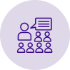
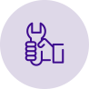

¿QUÉ HACEMOS?
Diseñamos estrategias para la igualdad de oportunidades y de trato
Trabajamos con organizaciones sociales, deportivas, económicas y políticas.

Asesoramiento
Realizamos consultorías para aquellas organizaciones que quieren adoptar un enfoque de género en sus políticas.

Formación
Brindamos capacitaciones sobre
género y trabajo.

Herramientas
Generamos instrumentos para promover espacios de trabajo libres de violencia y discriminación.